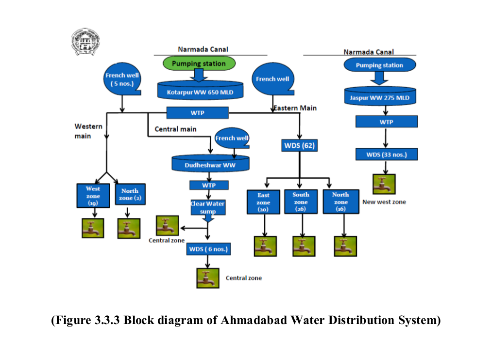
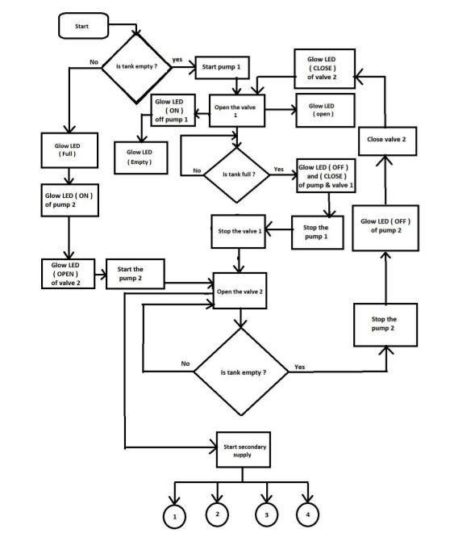

Automated water distribution system is used to distribute the municipal water automatically. This proposed water equally to all street pipe line. So that everyone will get the equal amount of water. The water from the storage tank is measured with the help of level sensor. Here we also identify the water theft accurately during the distribution time period. This system consists of Microcontroller. Microcontroller is used to control the distribution of water. It works as an mediator between display unit and operating machines.
The system use microcontroller to automate the process of water pumping in an overhead tank storage system and has the ability to detect the level of water, switch ON and OFF to pump accordingly and display status on LED panel. The research has successively provided an improvement on old water distribution system.
A controller based automatic plant system’s main aim was to provide automatic distribution of water with a system that operates with less man power. This in turn helps to save funds, water, man power and time consumption. The microcontroller is used for giving the interrupt signal to control the entire signal.

Water is important resource for all the livings in the earth. In that some people are not getting the sufficient amount of water because of unequal distribution of water. So only we implement this project. This project is used to distributing the water equally. So that everyone gets the equal amount of water. It also used to prevent the water theft during the distribution period. In previous method, person in charge will go to that place and open the valve for a particular time period.

The automatic water distribution system eliminates water wastage, the automatic system provides continuous water flow according to set point and reduce lot of man power. The automatic implementation in water distribution system insures to avoid wastage of water and reduce time consumption, it also avoids the water theft in pipe lines so that people could get equal share of water this system is excellent to prevent drinking water loss and theft. The proposed system can make water management more effective and convenient to the public. This method can possible solve the problem of traditional method of water distribution. We hope the proposed idea can make a great change in the cooperation water distribution system and can give benefit to the government by reducing the wastage of water , man power and time .
As a part of this project i helped in the programming section
For more imformation and the full project paper on this project contact Mr. Abhinav